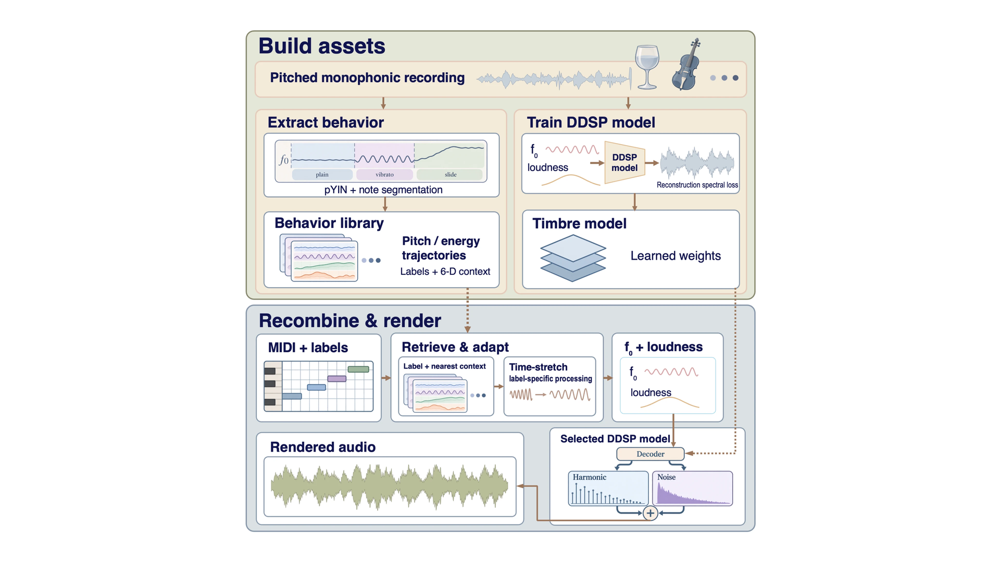

Capture a few seconds of a pitched sound and get two reusable assets: its timbre and the way it was played. Play the result live from a MIDI keyboard, or swap either asset across instruments without retraining.
Demo video · ISMIR 2026 Late-Breaking Demo
A violinist's vibrato, a guitarist's pitch bends, or the way a trumpet player shapes a note are all part of what makes a performance expressive. But these details are usually tied to the sound of the original instrument, making them difficult to reuse with a different timbre.
Quill explores whether an instrument's sound and a performer's playing style can be learned separately and combined in new ways. It takes monophonic recordings and learns two components: a timbre model and a library of note-level performance gestures such as vibrato and slides. Once learned, these can be mixed across instruments without retraining. A violinist's vibrato can drive a trumpet or a wine glass.
In one case study, I trained both components using just 82 seconds of rubbed-glass recordings.
The same folk melody, rendered with every pairing of timbre and playing behaviour. Along a row the timbre stays and the behaviour changes; down a column the behaviour stays and the timbre changes.
Outlined cells pair a timbre with its own behaviour library. All clips are rendered by Quill from the same MIDI file.
Capture and live playing run without a neural network. The neural timbre model is a layer on top.
Spectral core. A captured sound is decomposed into harmonics and noise. Pitch is tracked with PESTO and cross-checked against pYIN. Up to 60 harmonic amplitudes are measured per frame by parabolic peak interpolation, and the residual is taken by subtraction in the complex STFT domain and stored as a 40-band noise envelope. The sound can then be resynthesised at any pitch and length with its formants preserved.
Real-time engine. I wrote the additive synthesiser from scratch in NumPy and Numba. Steady notes use a phasor-recursion path; bends and slides use a per-sample path. Pitch, loudness and harmonic gains are interpolated inside each block to avoid zipper noise, and partials fade out near Nyquist. A gesture interpreter turns MIDI input into articulations: overlapping notes become legato or slides, fast note groups become strums, and the mod wheel controls vibrato depth. At 16 voices, a 256-sample block renders in a median of 2.65 ms (p95 3.1 ms) against a 5.8 ms budget on an Apple M2. Live playing and offline rendering share one code path.
Neural timbre. A lightweight DDSP synthesizer (~500K parameters) models each instrument's sound from pitch and loudness inputs. I trained separate models for violin and trumpet (URMP) and guitar (GuitarSet), using around 12,000 training steps per model on a single GPU.
Performance library. Instead of learning expression as part of the synthesizer, Quill extracts note-level trajectories from recorded performances. Each entry contains pitch deviation, energy, spectral brightness, and noise ratio. Each entry also has an articulation label (plain, vibrato, or slide), assigned automatically from pitch contours. The rule-based articulation classifier reaches a macro-F1 of 0.828 on IDMT-SMT-Guitar.
Cross-instrument rendering. When rendering MIDI, Quill searches the style library for a matching performance trajectory, adjusts it to the note's duration, and applies it to the selected timbre model. The same performance gesture can then be rendered with different instrument sounds, without retraining either component.

Source attribution. Cross-rendering across violin, trumpet, and guitar passes all 12 source-attribution checks: behaviour signatures (pitch modulation, drift, RMS) follow the behaviour source, while timbre signatures (MFCC) follow the timbre source.
Listening study. In a pre-specified, randomised study with 19 participants, renders using retrieved performance behaviour were preferred as more human-like by all 19 participants and more expressive by 18 of 19.
Participants were also tested on whether they could distinguish changes in performance behaviour and identify transferred expression across instruments. Behaviour-swap discrimination was successful for 19 of 19 and 17 of 19 participants across the two tests (one-sided binomial, p<0.001). In the cross-instrument ABX task, median participant accuracy was 100% across six violin, trumpet, and guitar trials, with 17 to 19 participants answering each trial correctly.
Baseline comparison. On standard violin naturalness, MIDI-DDSP scored higher (median 5 vs. 4, Wilcoxon p<0.001), although it was not designed for the cross-instrument expression transfer that Quill focuses on.
ISMIR 2026 — Late-Breaking Demo · Abu Dhabi, UAE
An expressive renderer must learn two things: how an instrument sounds and how it is played. Quill factorizes them into two separately learned, reusable assets: a lightweight DDSP timbre model and a note-level style library of pitch and energy trajectories, retrieved by articulation-conditioned nearest-neighbor lookup. Either asset can be swapped across instruments without retraining. Cross-rendering across violin, trumpet, and guitar passes all 12 source-attribution checks. In a pre-specified listening study (N=19), listeners track behaviour across timbres and rate renders that carry it as more human-like. A paired counterfactual test isolates the articulation-label intervention from note-level confounds. A case study shows that both assets can also be learned from 82s of rubbed-glass recordings.